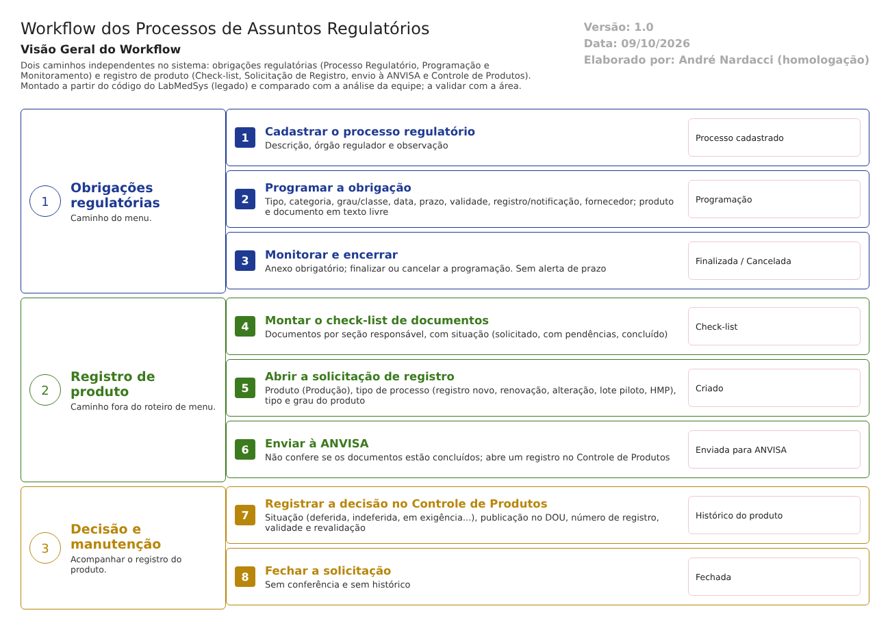

Objetivo
Este documento descreve os processos de assuntos regulatórios no LabMedSys, como estão no código. Também confronta o código com a análise que a equipe já fez desse tema (Documentação/LabMedSys - Assuntos Regulatorios.docx e LabMedSys - Fluxo Assuntos Regulatórios.docx), que partiu do documento do fornecedor e deixou vários pontos "a validar".
Foi montado a partir do código do sistema legado. O que depende da prática da área está marcado como a validar. Os casos de teste estão no fim.
Escopo
O sistema tem dois caminhos independentes, que não se ligam:
- Obrigações regulatórias, pelas telas do menu: Processo Regulatório → Programação → Monitoramento. É o que a análise da equipe chama de itens 13 e 14.
- Registro de produto, pelas telas da área
AssRegulatorios, fora do roteiro de menu do fornecedor: Check-list, Solicitação de Registro, envio à ANVISA e Controle de Produtos Enviados para Registro Anvisa.
Fora do escopo: as telas que são só protótipo (Petição de Notificação de Produção de Lote Piloto, Histórico HMP, Produtos Enviados para Registro ANVISA), a tela Exigências da ANVISA, que está quebrada (achado 4 do reconhecimento), e o controle de mudanças (fluxo próprio).
Nomes das telas: como aparecem no menu ou no alto de cada tela. Os caminhos de código são relativos a 5.garantia_qualidade/app/. Para encurtar: Bloco2/ e AssRegulatorios/ querem dizer HSolutions.GQ.UI/Areas/<pasta>/Controllers/; Service/ quer dizer HSolutions.GQ.Domain/Service/.
Visão geral do processo

No primeiro caminho, Assuntos Regulatórios cadastra um processo regulatório, por exemplo uma obrigação perante um órgão. Depois, programa cada ocorrência, com data, prazo máximo, validade, registro ou notificação, fornecedor, produto e documento. Por fim, monitora, anexando a evidência e finalizando ou cancelando a programação.
No segundo caminho, a área monta um check-list com os documentos necessários para um registro, cada um com uma seção responsável e uma situação. Abre uma solicitação de registro para um produto (registro novo, renovação, alteração, lote piloto ou HMP), envia à ANVISA e acompanha a decisão no Controle de Produtos: deferida, indeferida, em exigência, número de registro, publicação no DOU, validade e revalidação. Depois, fecha a solicitação.
Comparação com a análise da equipe
| O que a análise da equipe registrou | O que o código mostra | Situação |
|---|---|---|
| Programação: "Somente permitir programação para Processo Regulatório existente" (RN001) | O processo regulatório é obrigatório (Service/ProgramacaoValidator.cs:38) |
Confirmado |
| "Prazo Máximo deve ser maior ou igual à Data Programada" (RN002) | Não existe no servidor nem no script da tela. O validador só exige que as datas sejam preenchidas (ProgramacaoValidator.cs:68-74; HSolutions.GQ.UI/Areas/Bloco2/Script/ProgramacaoEditar.js) |
Não confirmado |
| "Validade não pode ser anterior ao prazo programado" (RN003) | Não existe: só a obrigatoriedade (ProgramacaoValidator.cs:50) |
Não confirmado |
| "Responsável preenchido automaticamente" (RN004) | Confirmado | Confirmado |
| "Produto deve existir previamente no sistema" (RN005) | Não. O nome do produto é uma caixa de texto livre (HSolutions.GQ.UI/Areas/Bloco2/Views/Programacao/_Form.cshtml:99). Só a Solicitação de Registro busca o produto na Produção |
Não confirmado |
| Entradas: Cadastro de Produto, Pessoa Jurídica, Controle Documental | Só a pessoa jurídica (fornecedor) vem de outro módulo (Bloco2/ProgramacaoController.cs:132). Nome e número do documento são texto livre (_Form.cshtml:106) |
Parcial |
| Saídas: Monitoramento, Controle de Desvios, Controle de Mudanças | Só o Monitoramento. Nada no código liga a programação a desvios ou mudanças | Não confirmado |
| Workflow de aprovação, alertas de vencimento, bloqueios, assinatura eletrônica: "não evidenciados" | Confirmado: não existem | Confirmado |
| Encerramento formal: "necessita validação" | O Monitoramento finaliza ou cancela a programação, com anexo obrigatório e histórico (Bloco2/MonitoramentoController.cs:282-315; Service/MonitoramentoValidator.cs) |
Existe, simples |
| A análise da equipe não cobriu Check-list, Solicitação de Registro e Controle de Produtos | Existem, com lógica, mas fora do roteiro de menu do fornecedor | Novo |
Descrição funcional das etapas
"A numeração das regras de negócio é reiniciada em cada atividade, visando facilitar sua identificação e manutenção."
Processo Regulatório
Regras de negócio
- RN001 – Só a descrição é obrigatória (
Service/ProcessoRegulatorioValidator.cs). Também registra o órgão regulador e uma observação. - RN002 – A exclusão vai para a lixeira, sem histórico (
Bloco2/ProcessoRegulatorioController.cs:254).
Telas do sistema
| Módulo | Tela | Finalidade |
|---|---|---|
| Garantia da Qualidade | Processo Regulatório | Cadastro das obrigações |
Programação
Regras de negócio
- RN001 – Obrigatórios: processo regulatório, tipo, categoria, grau ou classe, data programada, prazo máximo, validade, nome e número do documento e nome do produto (
Service/ProgramacaoValidator.cs:26a:80). - RN002 – Não há regra entre as datas: o prazo pode ser anterior à data programada e a validade anterior ao prazo.
- RN003 – O produto e o documento são digitados; não há ligação com a Produção nem com o Controle de Documentos. O fornecedor vem do cadastro de pessoas jurídicas do Principal.
- RN004 – A programação grava histórico (
Bloco2/ProgramacaoController.cs:238-243). - RN005 – Nenhum aviso de prazo ou validade próximos do fim. A lista pode ser filtrada, mas ninguém é avisado.
Telas do sistema
| Módulo | Tela | Finalidade |
|---|---|---|
| Garantia da Qualidade | Programação | Prazos, validade, produto e documento de cada obrigação |
Monitoramento
Regras de negócio
- RN001 – Para registrar o monitoramento, é obrigatório anexar um arquivo (
Service/MonitoramentoValidator.cs). O registro do monitoramento é criado sem histórico (Bloco2/MonitoramentoController.cs:217). - RN002 – O monitoramento finaliza ou cancela a programação, marcando-a como monitorada, com histórico da mudança de situação (
MonitoramentoController.cs:282-315).
Telas do sistema
| Módulo | Tela | Finalidade |
|---|---|---|
| Garantia da Qualidade | Monitoramento | Evidência e encerramento da programação |
Check-list e Solicitação de Registro
Regras de negócio
- RN001 – O check-list pode ser padrão ou de registro e lista os documentos necessários, cada um com sequência, seção responsável, responsável, datas de entrega e retorno e situação: Solicitado, Com Pendências, Concluído ou Outro (
HSolutions.GQ.Domain/Entities/AssRegulatorio/DocumentoCheckList.cs). A edição do check-list e a inclusão ou exclusão de documentos gravam sem histórico (AssRegulatorios/ChecklistPadraoController.cs:250,:353e:395). - RN002 – A solicitação de registro busca o produto na Produção e registra o tipo de processo (registro novo, renovação, alteração, lote piloto, HMP ou outro), o tipo e o grau do produto, a área solicitante e o número da CI. Nasce como Criado (
AssRegulatorios/SolicitacaoRegistroController.cs:181). - RN003 – Enviar à ANVISA muda a solicitação para Enviada para ANVISA e cria um registro vazio no Controle de Produtos (
SolicitacaoRegistroController.cs:536-562). O envio não confere se os documentos do check-list estão concluídos, e a mudança de situação grava sem histórico (:548). - RN004 – Fechar muda para Fechada, também sem conferência e sem histórico (
SolicitacaoRegistroController.cs:503-515). - RN005 – As situações "Deferida", "Indeferida", "Em exigências", "Pendência de documentos" e "Arquivo temporário" não são usadas na solicitação: só aparecem como opções no Controle de Produtos.
Telas do sistema
| Módulo | Tela | Finalidade |
|---|---|---|
| Garantia da Qualidade | Check-list | Documentos exigidos para o registro |
| Garantia da Qualidade | Solicitação de Registro | Pedido de registro, envio e fechamento |
Controle de Produtos Enviados para Registro Anvisa
Regras de negócio
- RN001 – Para cada produto, guarda o histórico na ANVISA: situação (deferida, indeferida, em exigência, pendência de documentos, arquivo temporário), motivo da exigência, princípio ativo, categoria, apresentação, publicação no DOU, número do processo e do registro, validade em meses e data de revalidação (
HSolutions.GQ.Domain/Entities/AssRegulatorio/HistoricoProdutoAnvisa.cs). - RN002 – A data de vencimento é a própria data de revalidação (
AssRegulatorios/ControleProdutosAnvisaController.cs:224-225). A lista filtra por vencimento, mas não avisa quem vai vencer. - RN003 – A alteração do histórico grava sem histórico (
ControleProdutosAnvisaController.cs:204). - RN004 – A situação do registro não chega a nenhum outro módulo: um produto com registro indeferido ou vencido continua disponível para produção e venda.
Telas do sistema
| Módulo | Tela | Finalidade |
|---|---|---|
| Garantia da Qualidade | Controle de Produtos Enviados para Registro Anvisa | Situação do registro de cada produto |
Pontos de atenção
1. Dois sistemas regulatórios que não se falam. O caminho do menu (Processo Regulatório, Programação, Monitoramento) e o caminho do registro de produto (Check-list, Solicitação, Controle de Produtos) não compartilham nada. A programação nem conhece o produto da Produção.
2. As regras descritas pela equipe não estão no código. As regras entre prazo, data programada e validade não existem, e o produto e o documento são texto livre. Isso muda a análise da equipe: a Programação é mais um cadastro com datas do que uma camada operacional.
3. Sem aviso de prazo e sem efeito nos outros módulos. Nenhuma obrigação, programação ou registro vencido gera aviso. Um registro indeferido ou vencido não impede a produção nem a venda do produto (art. 8º, XV da RDC 658/2022: o produto precisa estar conforme o registro).
4. Envio à ANVISA sem conferência e sem histórico. A solicitação vai para "Enviada para ANVISA" com documentos pendentes, e o envio e o fechamento não deixam histórico. O mesmo vale para as alterações do check-list e do histórico do produto.
5. A mudança não chega aqui. O controle de mudanças tem o item "Regulatórios", mas não abre nem consulta nada em Assuntos Regulatórios (fluxo controle-mudancas.md). A análise da equipe já apontava essa integração como necessária.
Casos de teste
Dados: um processo regulatório TESTE; o fornecedor TESTE PJ FARMACÊUTICA LTDA; um produto TESTE da Produção, se houver. Todas as descrições começando por TESTE.
| Caso | O que fazer | Resultado esperado |
|---|---|---|
| CT-GQ-090 | Processo Regulatório sem descrição; depois com descrição | Recusa; depois salvo |
| CT-GQ-091 | Programação com prazo máximo anterior à data programada e validade anterior ao prazo | Pela regra documentada, deveria recusar. Registrar se aceitar (ponto 2) |
| CT-GQ-092 | Programação com um nome de produto que não existe ("TESTE INEXISTENTE") | Registrar que aceita qualquer texto |
| CT-GQ-093 | Programação com validade de amanhã; no dia seguinte, abrir a lista | Registrar que não há aviso (ponto 3) |
| CT-GQ-094 | Monitoramento sem anexo; depois com anexo, finalizando | Recusa; depois a programação fica finalizada, com histórico |
| CT-GQ-095 | Check-list com dois documentos, um "Com Pendências" | Salvo; consultar o histórico da edição |
| CT-GQ-096 | Solicitação de Registro de registro novo para o produto TESTE, usando o check-list |
Criado |
| CT-GQ-097 | Enviar à ANVISA com o documento ainda "Com Pendências" | Pela norma, deveria impedir. Registrar se enviar; consultar o histórico (ponto 4) |
| CT-GQ-098 | No Controle de Produtos, registrar "Indeferida pela ANVISA" para o produto TESTE |
Salvo |
| CT-GQ-099 | Com o registro indeferido, abrir uma ordem de produção ou um pedido do produto TESTE | Registrar que nada impede (ponto 3) |
| CT-GQ-100 | Fechar a solicitação e consultar o histórico | Fechada. Registrar a falta de histórico |
| CT-GQ-101 | Abrir a tela Exigências da ANVISA | Registrar o erro (achado 4 do reconhecimento) |
Prioridade (testes por risco): CT-GQ-099, 097, 091 e 093 primeiro. Eles tocam a conformidade do produto com o registro, a trilha de auditoria e os prazos.